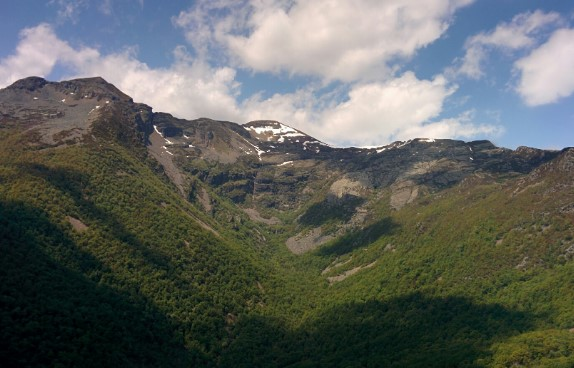
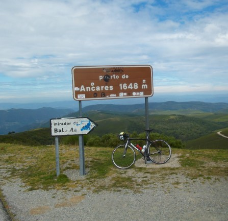
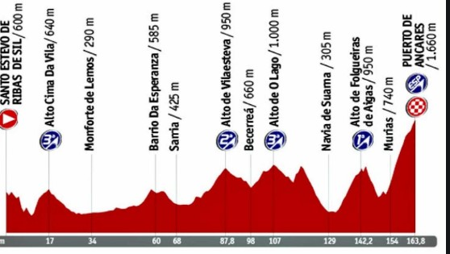

Orografia

La orografía que rodea al Valle de Ancares ofrece gran información acerca de su pasado de origen glaciar. En la imagen de la izquierda podemos observar el pico Cuiña, una de las cotas mas altas y
uno de los lugares que ofrece unas vistas privilegiadas, ya que desde allí podemos ver Galica, León y Asturias al mismo tiempo.
La sierra de Ancares constituye el extremo occidental de la cordillera Cantábrica y conforma una alineación montañosa en arco. Pertenece a la Zona Asturoccidental-Leonesa, y en el subsuelo dominan las pizarras, areniscas y cuarcitas, junto a las calizas y
La orogenia herciniana y más tarde alpina, junto al proceso de modelado glaciar, configuran este espacio como un conjunto de elevadas cumbres, con altitud entre
1500 y 2000 m, en el que la acción del hielo ha dado lugar a profundos valles glaciares, circos y lagunas glaciares, y a depósitos morrénicos.
Si bien la acción de los
glaciares fue similar en los valles de ambas laderas de la sierra, fue superior en los valles orientales donde el hielo llegó a tener entre
260 y 280 m de espesor en los valles de Burbia y Ancares, y las lenguas glaciares alcanzaron entre 11 y 13 km de largo bajando hasta 800 m de altitud.

No ajeno a la polémica que se explica en la historia está el Puerto de Ancares (1648 msnm).
En el año 2015 se inció una disputa por las lindes de este terreno, suscitado bajo mi punto de vista, por el interes que despertó la organización de dos finales de etapa de La Vuelta a España (2012 y 2014) en dicho puerto, catalogado como "Categoría Especial"
y situándolo en el panorama ciclista nacional a la altura de otros colosos de la vuelta como puede ser L'angliru.
Se da la circustancia que la organización de la Vuelta a España paga a aquel ayuntamiento donde se realice el final de etapa, y es por ello por lo que
en 2015 que solicitó la revisión cartográfica de la zona para ubicarlo en Galicia.
Finalmente en el año 2017 fue cuando se resolvió el litigio adjudicando el puerto al Ayuntamiento de Navia de Suarna (Lugo), aunque al parecer se ve que por parte de la Diputación de Lugo
siguen esperando que sea el Ayuntamiento de Candín (León), y la Junta de Castilla y León quienes se encarguen de la gestión y mantenimeinto de ese puerto. O eso parece.

En cualquier caso, la orografía del terreno confiere la posibilidad de realizar numerosas actividades deportivas, como puede ser, amen del ya comentado ciclismo en carretera, senderismo, trekking, raquetas de nieve, mtb, etc.
En los últimos años se celebró la ya extinta prueba "Ancares 3 Trail", prueba que por problemas internos en el Ayuntamiento de Candín dejó de reaizarse, pero la cual suponía un gran atractivo para corredores de toda España,
y que fomentaba un turismo rural y natural en la zona.
La prueba consistía en tres carreras con mas de 70 kilómetros acumulados y 4.000 metros de desnivel positivo.
En la actulidad hay un proyecto de una empresa multiaventura, originaria en la zona, que ofrecerá diversas actividades para conocer la zona combinándolas con un estilo de vida activo, así como fomentando el conocimiento del entorno
y la importancia de cuidar y velar por la conservación natural y de las constumbres tradicionales de la zona.
Tambien exite la posiblidad de realizar diferentes rutas en coche para conocer la zona, como las que se detallan en el siguiente enlance.
|